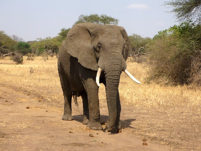

The coolest creature
The elephant is awesome because it is my favorite animal.
Now originally it was my favorite animal growing up because it was the only animal I could think of that started with the letter E (the first letter of my name).
However, since adolescence, I have found that the elephant is a fasinating animal and still my favorite.
Here are some reasons to find elephants super cool:
They are considered a keystone species due to their impact on the environment. Basically, they can make
or break the area they are in depending on their actions.
For a positive example, they dig waterholes in times of drought that
are later used by other animals. On the flipside, if they tred around an area enough,
their massive weight will compact the
dirt together making the rain run off and cause erosion.
Elephants are also creatures of importance in African and Asian religions. Certain African tribes considered
elephants to be the reincarnations of their chieftans and would bury their leaders with the ivory tusks of the elephant.
In Asian religions such as Hindu, the god Airavata, is the father of elephants and controls rainbows and lightning.
Another Hindu god, Ganesha, often depicted with an elephant-like head, is believed to be the giver of success and desires.
In Buddhism, it is believed the Buddha himself was reincarnated from a white elephant.